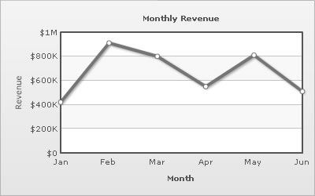
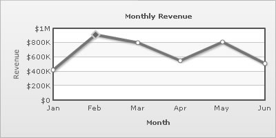
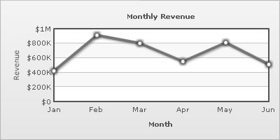
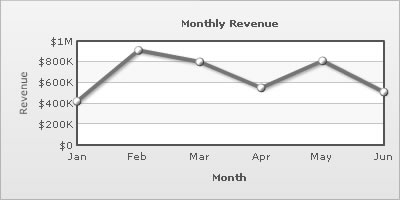

XML Attributes for Anchors |
||||||||||||||||||||||||
Each data point in a line/spline/area chart is represented by an anchor. The anchors help identify the data point better in the chart. They also show a tool tip showing the data point details when the mouse is hovered over them, and can be linked to other pages as well. |
||||||||||||||||||||||||
|  | ||||||||||||||||||||||||
| The XML for the above is: | ||||||||||||||||||||||||
| <chart caption='Monthly Revenue' xAxisName='Month' yAxisName='Revenue' numberPrefix='$' showValues='0'> <set label='Jan' value='420000' /> <set label='Feb' value='910000' /> <set label='Mar' value='800000' /> <set label='Apr' value='550000' /> <set label='May' value='810000' /> <set label='Jun' value='510000' /> </chart> |
||||||||||||||||||||||||
| The anchors are displayed by default. To hide them, use the drawAnchors='0' attribute. | ||||||||||||||||||||||||
| <chart drawAnchors='0' ...> | ||||||||||||||||||||||||
Once the anchors are hidden, the tool tips for the data points would not be displayed and the links would not work either. If you need to hide the anchors but still have tool tip and link, use: <chart anchorAlpha='0' ... > |
||||||||||||||||||||||||
| Customizing the anchor properties | ||||||||||||||||||||||||
| The anchor looks can be customized using the following attributes: | ||||||||||||||||||||||||
|
||||||||||||||||||||||||
| Data Highlighting | ||||||||||||||||||||||||
| In order to highlight a particular data point, you can define its anchor properties explicitly. | ||||||||||||||||||||||||
| <chart caption='Monthly Revenue' xAxisName='Month' yAxisName='Revenue' numberPrefix='$' showValues='0'> <set label='Jan' value='420000' /> <set label='Feb' value='910000' anchorSides='4' anchorRadius='6' anchorBgColor='666666' anchorBorderColor='CCCCCC' anchorBorderThickness='2'/> <set label='Mar' value='800000' /> <set label='Apr' value='550000' /> <set label='May' value='810000' /> <set label='Jun' value='510000' /> </chart> |
||||||||||||||||||||||||
|  | ||||||||||||||||||||||||
| Note that the anchor for Feb has different properties than the other anchors. | ||||||||||||||||||||||||
| Using Styles to apply glow effect to the anchors | ||||||||||||||||||||||||
| Using Styles, you can apply effects (shadow, glow, bevel, blur) to the anchors. Let us see how to provide a glow effect to the anchors. | ||||||||||||||||||||||||
| <chart caption='Monthly Revenue' xAxisName='Month' yAxisName='Revenue' numberPrefix='$' showValues='0'> <set label='Jan' value='420000' /> <set label='Feb' value='910000' /> <set label='Mar' value='800000' /> <set label='Apr' value='550000' /> <set label='May' value='810000' /> <set label='Jun' value='510000' /> <styles> <definition> <style name='myGlow' type='glow' color='999999' /> </definition> <application> <apply toObject='ANCHORS' styles='myGlow' /> </application> </styles> </chart> |
||||||||||||||||||||||||
|  | ||||||||||||||||||||||||
| Using Styles to apply bevel effect to the anchors | ||||||||||||||||||||||||
| To provide a bevel effect to the anchors, we have the following XML: | ||||||||||||||||||||||||
| <chart caption='Monthly Revenue' xAxisName='Month' yAxisName='Revenue' numberPrefix='$' showValues='0' anchorradius='4' > <set label='Jan' value='420000' /> <set label='Feb' value='910000' /> <set label='Mar' value='800000' /> <set label='Apr' value='550000' /> <set label='May' value='810000' /> <set label='Jun' value='510000' /> <styles> <definition> <style name='myBevel' type='bevel' distance='2' /> </definition> <application> <apply toObject='ANCHORS' styles='myBevel' /> </application> </styles> </chart> |
||||||||||||||||||||||||
|  | ||||||||||||||||||||||||
| Animating anchors using STYLES | ||||||||||||||||||||||||
| The anchors can be animted using STYLES. In the example below, we provide a bouncing effect to the anchors. | ||||||||||||||||||||||||
| <chart caption='Monthly Revenue' xAxisName='Month' yAxisName='Revenue' numberPrefix='$' showValues='0' anchorradius='4' > <set label='Jan' value='420000' /> <set label='Feb' value='910000' /> <set label='Mar' value='800000' /> <set label='Apr' value='550000' /> <set label='May' value='810000' /> <set label='Jun' value='510000' /> <styles> <definition> <style name='myAnim' type='animation' param='_y' start='0' easing='Bounce' duration='1'/> </definition> <application> <apply toObject='ANCHORS' styles='myAnim' /> </application> </styles> </chart> |